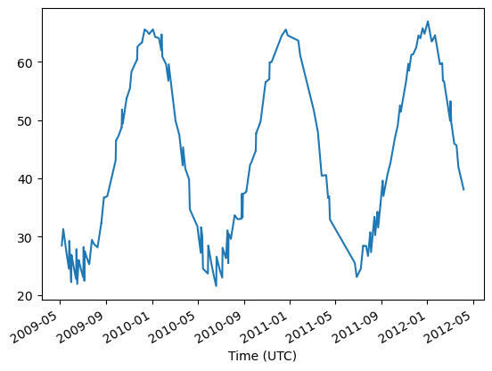

Reading space-separated files#
In one of the radiation lecture, you are asked to read files in .txt format in which the header contains metadata, followed by the data in columns, separated by spaces. The file looks like this.
Let’s read it with pandas.
Read the metadata#
This has to be done in pure python, line by line:
df_meta = {}
with open('SCIA_GSFC_NO2.txt') as file:
for i, line in enumerate(file):
line = line.rstrip()
print(line)
if line.startswith('Column'):
k, v = line.split(':')
df_meta[k.strip()] = v.strip()
# Stop after 30 lines
if i > 30:
break
SCIAMACHY retrievals of total NO2 vertical column amounts
Pixel footprint overlaps Pandora location GSFC, Lat 38.9926, Long -76.8396
Climatological footprint correction is based on 0.05 grid resolution and the effective Pandora location.
----------------------------------------------------------------
Column 1: UT date and time for center of measurement, yyyymmddThhmmssZ (ISO 8601)
Column 2: Solar zenith angle at the center-time of the measurement in degree
Column 3: Footprint pixel center latitude
Column 4: Footprint pixel center longitude
Column 5: Footprint pixel latitude corner 1
Column 6: Footprint pixel latitude corner 2
Column 7: Footprint pixel latitude corner 3
Column 8: Footprint pixel latitude corner 4
Column 9: Footprint pixel longitude corner 1
Column 10: Footprint pixel longitude corner 2
Column 11: Footprint pixel longitude corner 3
Column 12: Footprint pixel longitude corner 4
Column 13: NO2 vertical column amount [Dobson Units]
Column 14: Uncertainty of NO2 vertical column amount [Dobson Units]
Column 15: Climatological footprint correction of NO2 vertical column amount [Dobson Units]
Column 16: Uncertainty climatological footprint correction of NO2 vertical column amount [Dobson Units]
Column 17: Cloud fraction
Column 18: Footprint pixel area [deg^2]
Column 19: Effective Pandora location latitudinal correction [deg]
Column 20: Effective Pandora location longitudinal correction [deg]
----------------------------------------------------------------
20090505T154440Z 28.4650 39.0214 -76.7878 39.0695 38.8444 39.1940 38.9728 -76.4204 -76.5029 -77.0681 -77.1471 1.5182e-01 8.2979e-03 5.4211e-04 7.7206e-04 0.9796 0.1544 -1.7804e-03 3.3307e-03
20090509T151909Z 31.2893 39.0146 -77.0317 39.0811 38.8425 39.1922 38.9447 -76.6278 -76.6920 -77.3865 -77.4505 1.4768e-01 7.5719e-03 3.3673e-03 7.7109e-04 0.1864 0.1912 -1.6040e-03 4.4252e-03
20090509T151910Z 31.2880 38.9243 -76.6652 39.3051 39.0468 38.7999 38.5739 -78.1856 -78.2494 -75.2876 -75.3527 1.3956e-01 7.2270e-03 1.2312e-02 7.6775e-04 0.1858 0.7330 -1.6040e-03 4.4248e-03
20090518T153611Z 27.0193 38.9538 -76.6282 39.0085 38.7916 39.1146 38.8982 -76.2898 -76.3627 -76.8938 -76.9647 2.3173e-01 1.1801e-02 8.9077e-04 7.7275e-04 0.0000 0.1383 -1.4539e-03 3.5464e-03
20090524T154731Z 24.4820 39.0604 -76.7830 39.1051 38.8745 39.2404 39.0153 -76.3954 -76.4825 -77.0766 -77.1595 1.2280e-01 7.5891e-03 8.6057e-04 7.7163e-04 0.2446 0.1665 -1.3754e-03 3.0335e-03
20090525T151619Z 29.2774 39.0623 -77.1074 39.1328 38.8852 39.2461 38.9878 -76.6839 -76.7478 -77.4854 -77.5491 1.4499e-01 7.7248e-03 5.2112e-03 7.7081e-04 0.2241 0.2096 -1.2583e-03 4.3692e-03
20090525T151619Z 29.2767 38.8651 -75.9646 39.2461 38.9878 38.7406 38.5146 -77.4854 -77.5491 -74.5870 -74.6520 1.3296e-01 7.9510e-03 1.1861e-02 7.6768e-04 0.2433 0.7332 -1.2583e-03 4.3690e-03
df_meta
{'Column 1': 'UT date and time for center of measurement, yyyymmddThhmmssZ (ISO 8601)',
'Column 2': 'Solar zenith angle at the center-time of the measurement in degree',
'Column 3': 'Footprint pixel center latitude',
'Column 4': 'Footprint pixel center longitude',
'Column 5': 'Footprint pixel latitude corner 1',
'Column 6': 'Footprint pixel latitude corner 2',
'Column 7': 'Footprint pixel latitude corner 3',
'Column 8': 'Footprint pixel latitude corner 4',
'Column 9': 'Footprint pixel longitude corner 1',
'Column 10': 'Footprint pixel longitude corner 2',
'Column 11': 'Footprint pixel longitude corner 3',
'Column 12': 'Footprint pixel longitude corner 4',
'Column 13': 'NO2 vertical column amount [Dobson Units]',
'Column 14': 'Uncertainty of NO2 vertical column amount [Dobson Units]',
'Column 15': 'Climatological footprint correction of NO2 vertical column amount [Dobson Units]',
'Column 16': 'Uncertainty climatological footprint correction of NO2 vertical column amount [Dobson Units]',
'Column 17': 'Cloud fraction',
'Column 18': 'Footprint pixel area [deg^2]',
'Column 19': 'Effective Pandora location latitudinal correction [deg]',
'Column 20': 'Effective Pandora location longitudinal correction [deg]'}
I think that at this point it would be best to rename the columns to better variable names. Also, the exact line at which the data starts could also be inferred programmatically. This exercise is left to the reader.
Read the data#
import pandas as pd
df = pd.read_csv('SCIA_GSFC_NO2.txt',
header=None, # There is no proper header in the file
sep=' ', # The separator is spaces
skiprows=25, # The first rows are not organized (25 could be fetched automatically)
index_col=0, # The first column is the time index
parse_dates=True, # Parse the time automatically
)
# Give "nicer" names to columns
df.index.name = 'Time (UTC)'
df.columns = list(df_meta.keys())[1:]
df
| Column 2 | Column 3 | Column 4 | Column 5 | Column 6 | Column 7 | Column 8 | Column 9 | Column 10 | Column 11 | Column 12 | Column 13 | Column 14 | Column 15 | Column 16 | Column 17 | Column 18 | Column 19 | Column 20 | |
|---|---|---|---|---|---|---|---|---|---|---|---|---|---|---|---|---|---|---|---|
| Time (UTC) | |||||||||||||||||||
| 2009-05-05 15:44:40+00:00 | 28.4650 | 39.0214 | -76.7878 | 39.0695 | 38.8444 | 39.1940 | 38.9728 | -76.4204 | -76.5029 | -77.0681 | -77.1471 | 0.15182 | 0.008298 | 0.000542 | 0.000772 | 0.9796 | 0.1544 | -0.001780 | 0.003331 |
| 2009-05-09 15:19:09+00:00 | 31.2893 | 39.0146 | -77.0317 | 39.0811 | 38.8425 | 39.1922 | 38.9447 | -76.6278 | -76.6920 | -77.3865 | -77.4505 | 0.14768 | 0.007572 | 0.003367 | 0.000771 | 0.1864 | 0.1912 | -0.001604 | 0.004425 |
| 2009-05-09 15:19:10+00:00 | 31.2880 | 38.9243 | -76.6652 | 39.3051 | 39.0468 | 38.7999 | 38.5739 | -78.1856 | -78.2494 | -75.2876 | -75.3527 | 0.13956 | 0.007227 | 0.012312 | 0.000768 | 0.1858 | 0.7330 | -0.001604 | 0.004425 |
| 2009-05-18 15:36:11+00:00 | 27.0193 | 38.9538 | -76.6282 | 39.0085 | 38.7916 | 39.1146 | 38.8982 | -76.2898 | -76.3627 | -76.8938 | -76.9647 | 0.23173 | 0.011801 | 0.000891 | 0.000773 | 0.0000 | 0.1383 | -0.001454 | 0.003546 |
| 2009-05-24 15:47:31+00:00 | 24.4820 | 39.0604 | -76.7830 | 39.1051 | 38.8745 | 39.2404 | 39.0153 | -76.3954 | -76.4825 | -77.0766 | -77.1595 | 0.12280 | 0.007589 | 0.000861 | 0.000772 | 0.2446 | 0.1665 | -0.001375 | 0.003034 |
| ... | ... | ... | ... | ... | ... | ... | ... | ... | ... | ... | ... | ... | ... | ... | ... | ... | ... | ... | ... |
| 2012-03-18 15:36:11+00:00 | 45.6646 | 38.8337 | -76.5165 | 39.1740 | 38.9530 | 38.7062 | 38.4945 | -77.7083 | -77.7721 | -75.3132 | -75.3815 | 0.10088 | 0.009215 | 0.010842 | 0.000768 | 0.5504 | 0.5484 | -0.003730 | 0.005392 |
| 2012-03-23 15:52:37+00:00 | 41.9500 | 39.3591 | -78.0177 | 39.7136 | 39.5019 | 39.1953 | 38.9750 | -79.1681 | -79.2379 | -76.7408 | -76.8210 | 0.15875 | 0.010232 | NaN | NaN | 0.0000 | 0.5623 | -0.003456 | 0.004192 |
| 2012-03-23 15:52:39+00:00 | 41.9475 | 39.0725 | -77.1190 | 39.1203 | 38.9000 | 39.2407 | 39.0243 | -76.7593 | -76.8395 | -77.3939 | -77.4707 | 0.21058 | 0.010698 | 0.004900 | 0.000773 | 0.0000 | 0.1478 | -0.003456 | 0.004190 |
| 2012-04-06 15:39:29+00:00 | 38.0911 | 39.0904 | -76.9473 | 39.1477 | 38.9354 | 39.2458 | 39.0318 | -76.6175 | -76.6847 | -77.2129 | -77.2788 | 0.18388 | 0.010499 | 0.002880 | 0.000773 | 0.0000 | 0.1333 | -0.002774 | 0.004349 |
| 2012-04-06 15:39:31+00:00 | 38.0871 | 39.0305 | -77.2920 | 39.3710 | 39.1500 | 38.9027 | 38.6910 | -78.4871 | -78.5511 | -76.0853 | -76.1538 | 0.15921 | 0.011494 | 0.012565 | 0.000768 | 0.0000 | 0.5500 | -0.002774 | 0.004348 |
271 rows × 19 columns
df['Column 2'].plot();
